Nifty Cultures and Values
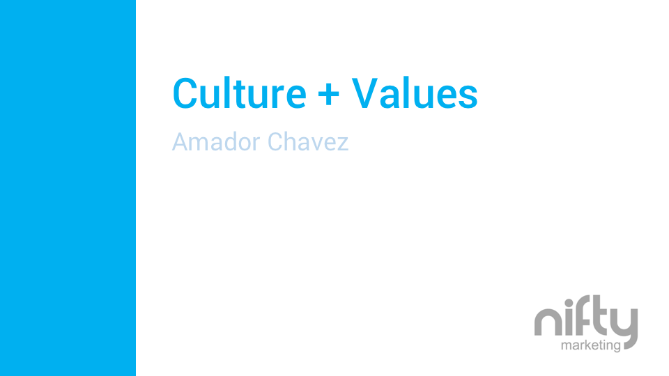
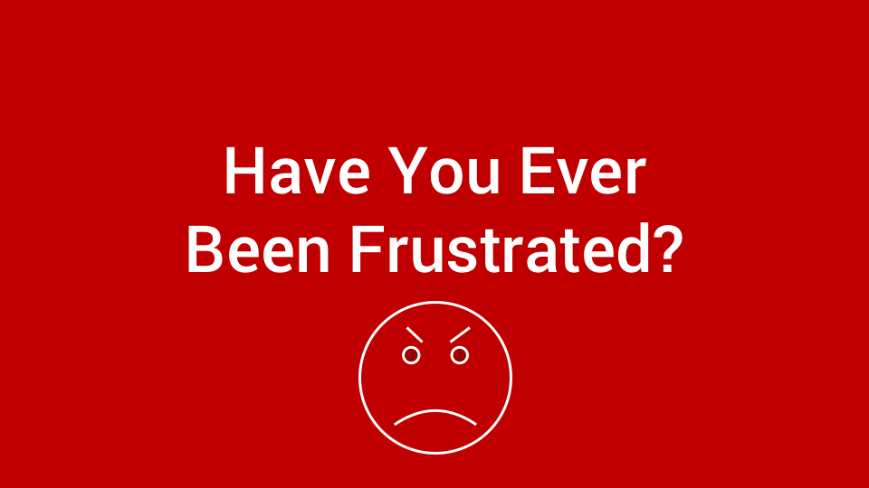
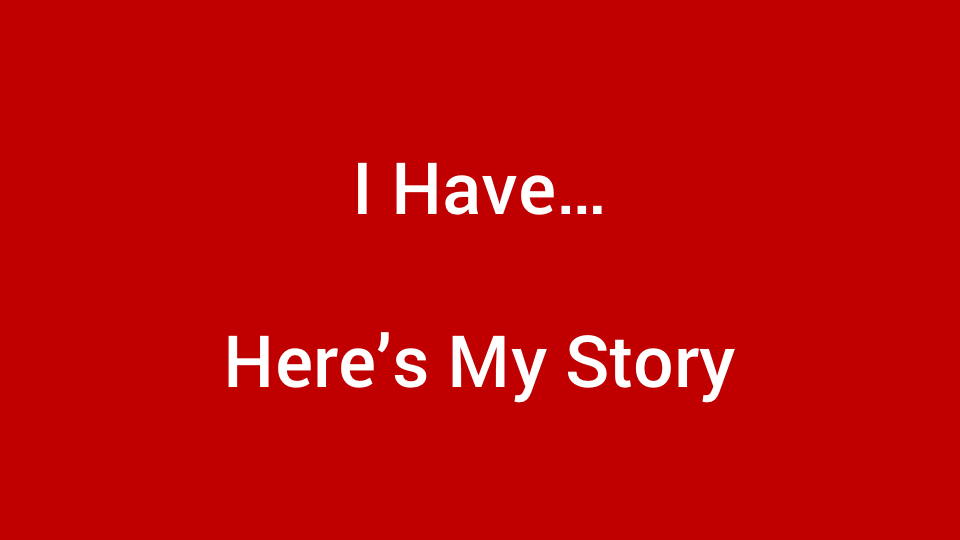
I was furious.
I was told I couldn't outsource for my clients anymore - based on the number of people on my team and the number of clients. Not based on what would help my clients.
I was told I had to use an outsourcing sheet and monitor tons of variables. I thought that time would better be used serving my clients.
I asked for clarity on what growth looked like, how my responsibilities would grow, and what I could expect salary wise. I was told I couldn't and shouldn't expect clarity.
I asked why salary discussion amongst employees was prohibited. I was told it was for the best.
My immediate instinct was that Nifty was wrong. I thought they weren't living according to the values they had written in the Employee handbook.
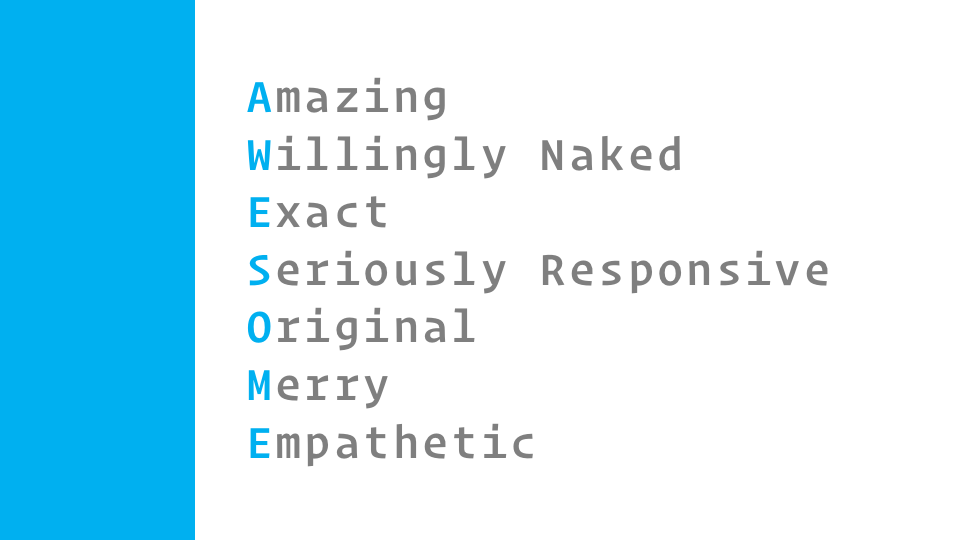
They were prioritizing the wrong things. They were taking advantage of me and my clients.
I made my opinion known.
And I found that leadership had thought through these issues a lot more than I had first realized. They brought up valid points I hadn't considered. We didn't agree on everything, but I came to understand their thought process.
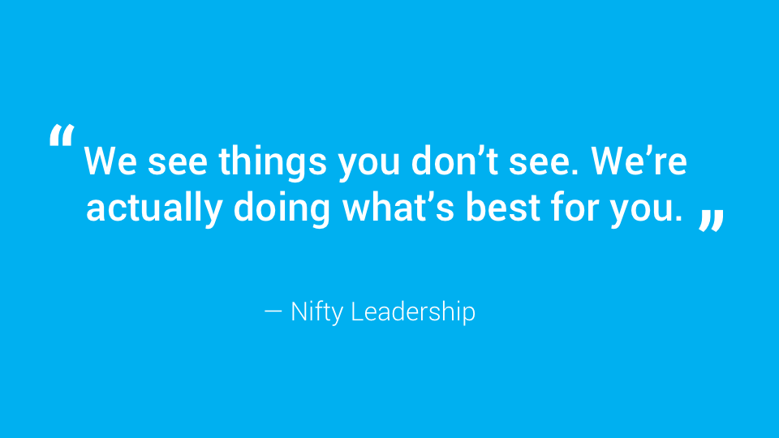
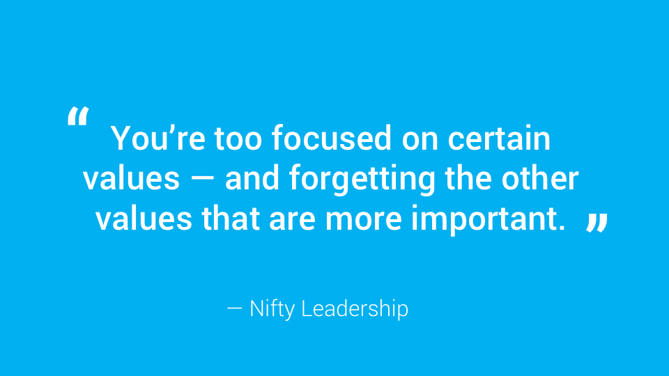
I was told outsourcing too much would result in my team not having anything to do. While it sucked, it wasn't permanent. As we got more clients, the restrictions would ease. It's the cost of growth.
I was told salary transparency would be Willingly Naked but it wouldn't be Empathetic. Seeing what other people earn could hurt people's feelings and cause bitterness.
I was told that getting clarity on what I could expect may be Exact but that Nifty can't predict the future. And if they end up having to go back on any promises they make - due to factors they can't control, I would become bitter. So, the Empathetic thing to do is to avoid clarity.
Life is About Trade-Offs
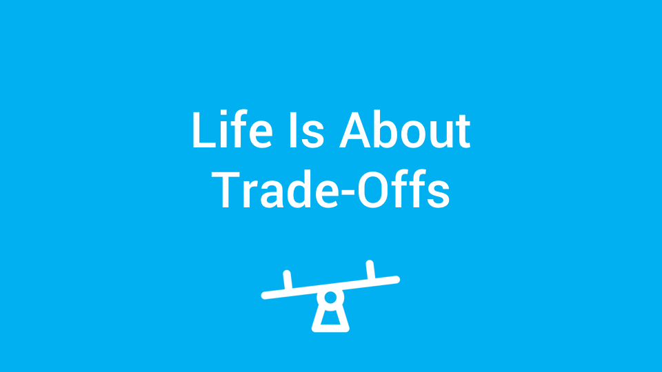
It all came down to one principle. Some values trump other values. Empathy trumps Willingly Naked, Exactness, and Amazing
I've come to realize there is some validity to this principle. Let's look at a few examples.
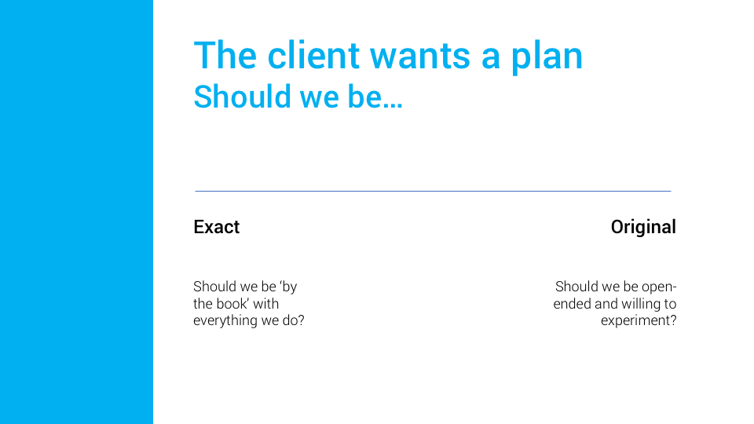
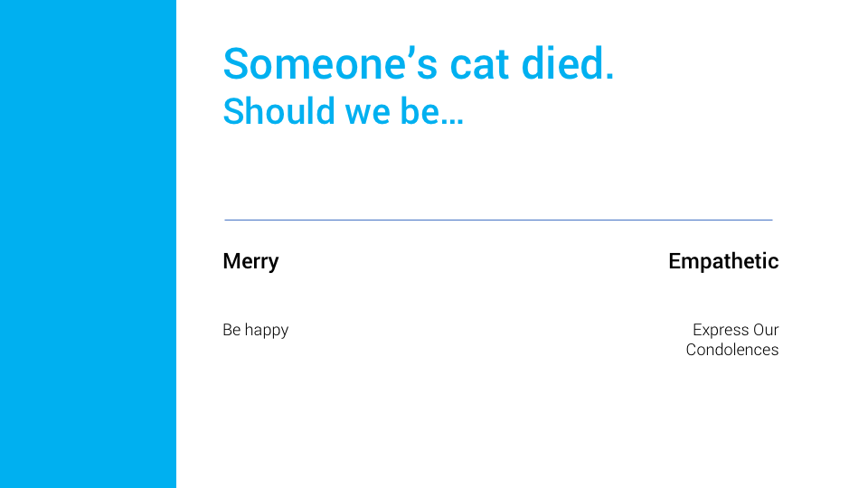
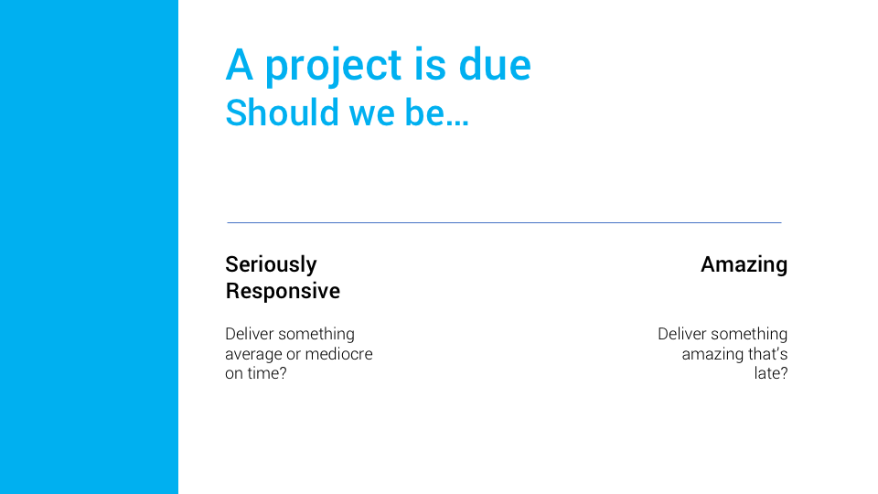
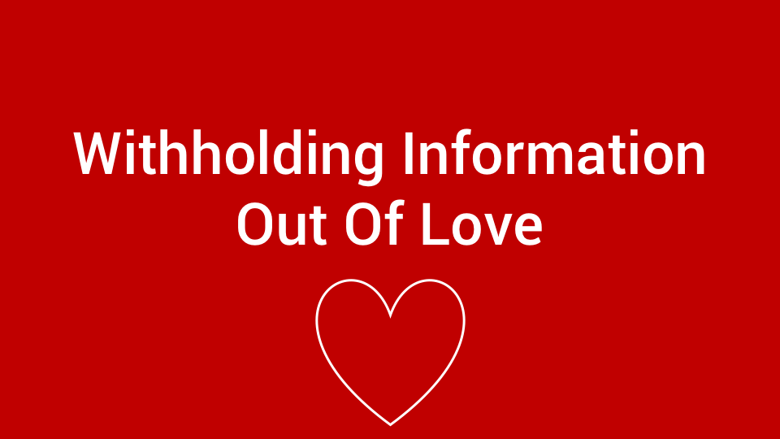
We see this principle in a lot of the stories we consume. We see people withhold information out of love - to protect the ones they love. I've been told by a lot of married men that there is such a thing as too much honesty in a relationship. Consider this scene in Liar Liar:
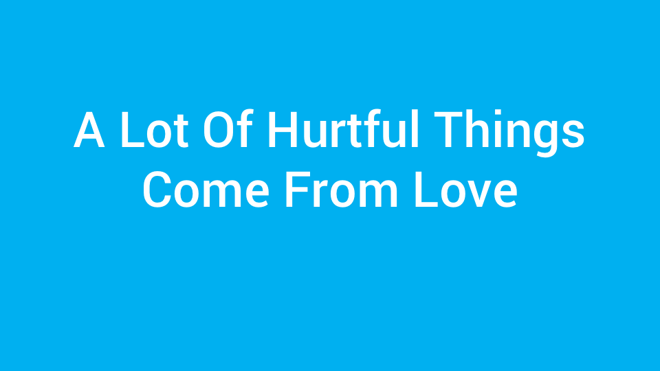
The truth is: a lot of hurtful things come from love - from good intentions.
Consider the scene in The Amazing Spider-Man 2 where Aunt May reveals she kept the truth about Peter's father from Peter because 'it would hurt him'.
Or President Taylor's actions in the last season of 24. She withholds information about Russia's involvement in the death of the IRK leader's husband - to ensure that a peace treaty could be enacted.
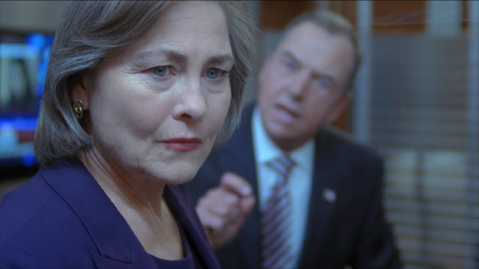
The majority of the time, people have good intentions for the things they do.
And I can relate to this. There were a couple of times here at Nifty where I had to make a choice regarding team members. Either option was going to hurt them, but one option was noticeably worse.
So, I chose the lesser of two evils.
And all my team members saw was apparent betrayal.
They didn't see that by doing what I did, I prevented something worse from happening.
Politics & Good Intentions
A common characteristic of both major US political parties is that they have good intentions. They care deeply about people.
But at times, they also strongly believe people can't make decisions for themselves. They believe people can't be trusted to make good decisions, and so the 'smart elite' should make the decisions for them, because the majority of people don't know any better. If the smart people can come up with a plan that will benefit everyone in the long run, then it's ok to withhold information or require seemingly unfair regulations.
Often, this is more apparent in the Progressive/Liberal side, though it does show up in certain Traditional/Conservative viewpoints.
Their motto is: "The knowledgeable few directing the many."
One side favors control through good intentions. The other side favors freedom regardless of the person's choices. It boils down to 'don't let people do wrong' vs 'let people do wrong and face the consequences.'
Let's look at a few examples:
Liberals are OK with forcing everyone to have health insurance because it ensures poor people have affordable insurance. Conservatives say let people make their own healthcare decisions.
Liberal people are OK with restricting or outlawing guns because guns lead to the deaths of many people. They don't want to get rid of guns to make us weaker, but to stop death. Conservatives say guns act as a safeguard against government corruption.
Liberal people are ok with banning trans fats or taxing sugary drinks because those things are bad for people. Conservative leaning people would say people should be able to choose what they eat.
Liberals are OK with making strict environmental standards because we need to ensure future generations are able to live healthy lives. Conservatives say we should be able to use the resources we have.
Liberals are OK with giving minorities preference because they have been mistreated for so long. Conservatives say we should focus on skill and merit.
Conservative are OK with violating people's privacy because they need to protect people from terrorism and corruption. Liberals say privacy is more important
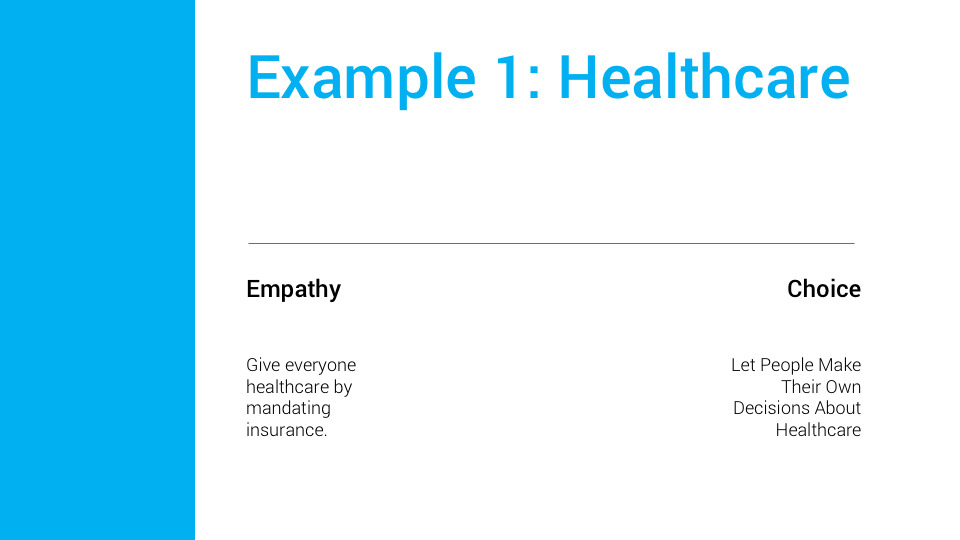
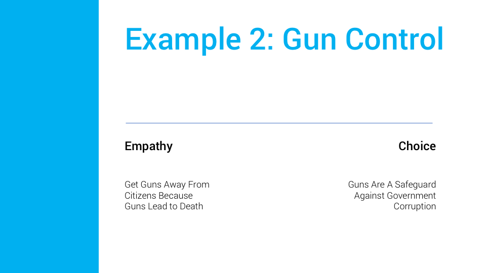
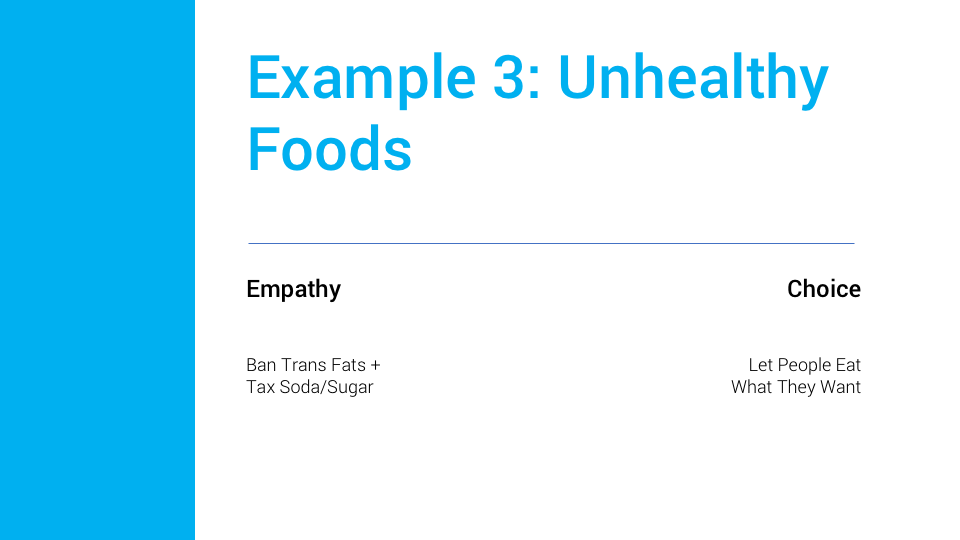
The viewpoints of these scenarios are reminiscent of Nifty. Nifty withholds information and makes seemingly unfair decisions because they need to protect people's feelings and well-being. Nifty knows what it's doing and what is best for employees. Nifty leadership is looking at dozens of variables. Thus, they are able to make better decisions for us than we could. We just need to trust them.
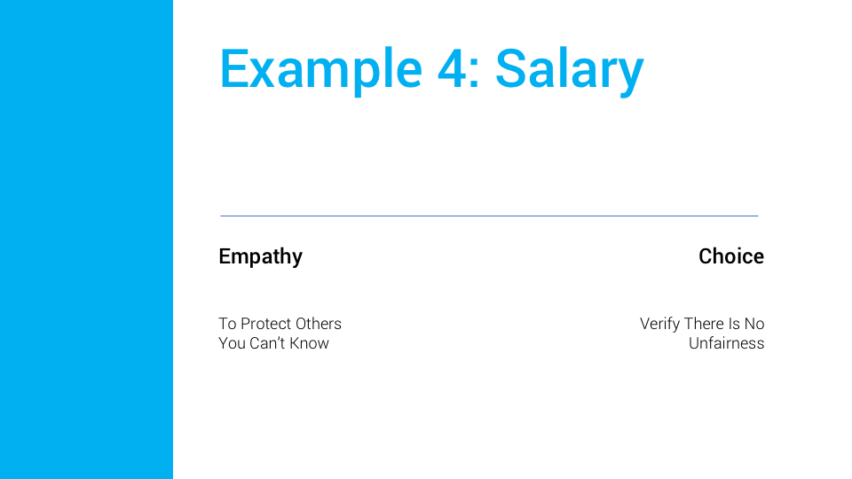
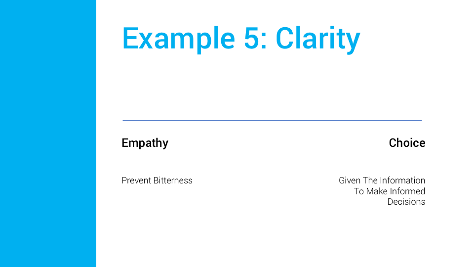
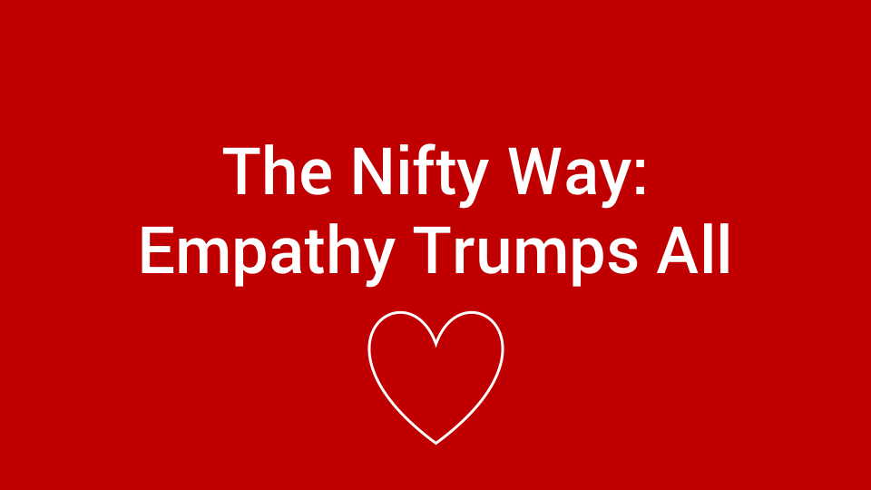
If this room is representative of the population, about 30% of you will agree with Nifty's standpoint. You say 'That's great that Nifty is looking at all those things. I'm glad I don't have to. I'm happy where I am'
Another 30% will say: "I don't like Nifty making decisions for me or hiding information to 'protect me.' I want to understand exactly what's going on in the company and choose my own responses."
The last 40% will see the strengths of both sides and fall somewhere in the middle.
Can Empathy Go Too Far?
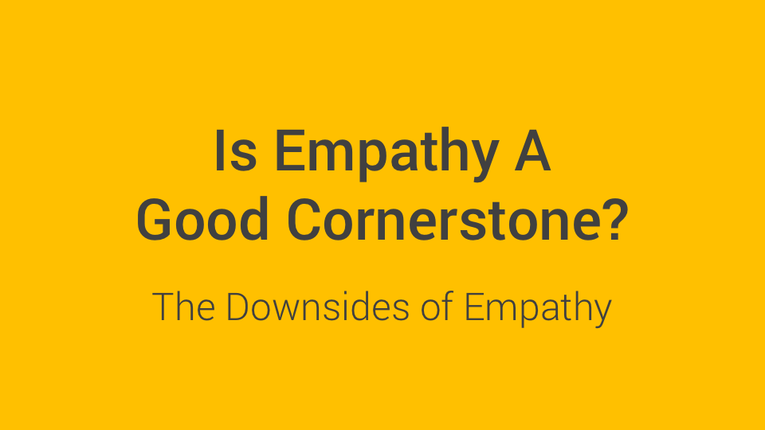
Empathy can go too far.
The truth is the 'smart elite' aren't perfect or omniscient. We have flawed people making decisions.
Now, in politics, parties don't usually rely on one person. Instead, they rely on scientific studies. But even those are called into question. Is climate change real? Does gun control work? Are fats bad for you? How many conflicting studies are there? If studies by the brightest minds can't be relied on, can the decisions of 2-3 people in Burley, Idaho be relied on?
The question we must answer is: "Should we trust the 'smart elite'?" Do they really have our best interests in mind? Are certain subsets of the population affected negatively?
Ronald Raegan used to repeat 'trust but verify.'
People have the tendency to become corrupt. And even if there is no explicit corruption, unconscious biases can result in wrong actions.
For example, this article touches on unconscious biases when it comes to tipping: https://www.eater.com/a/case-against-tipping
Do we just ignore these biases and trust people are doing what's right?
The truth is blind trust isn't good.
Think of the Jonestown cult group that drank poisoned Kool-Aid because they trusted their leader.
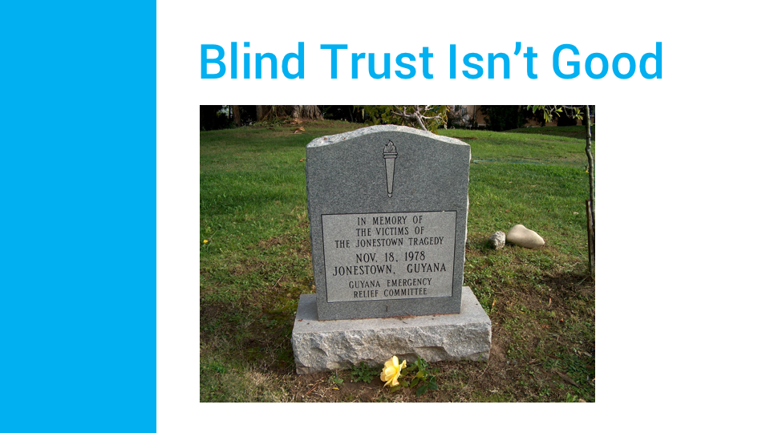
Sure, Nifty's policies might protect people's feelings, but it results in "information asymmetry." This means only one side has all the information.
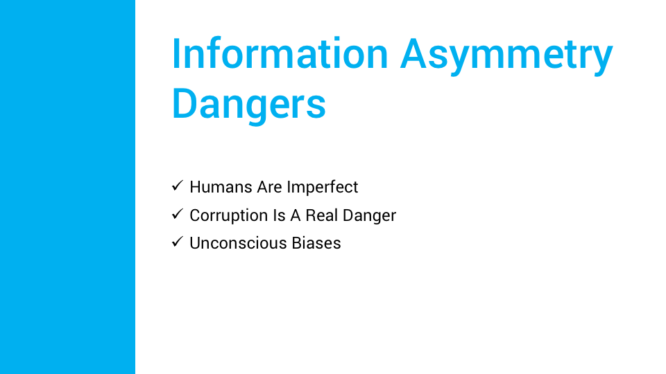
I'd argue we need to pursue information symmetry. Both sides knowing all of the facts prevents corruption. Without one side knowing all the facts it means no one can prove anything regarding the other side's actions - so the other side can do whatever he/she wants.
Information symmetry also prevents misunderstandings. Again, without both sides knowing everything people are stuck with getting with the canned-response of:
"We're looking at things you aren't even aware of."
How do we know things are happening fairly without bias or corruption?
Yes, freedom and transparency can hurt people's feelings or empower people to make the wrong decisions. But those things also respect freewill and can prevent & reveal corruption. Transparency can reveal things like women being paid less or minorities being paid less.
We need to be able to trust but verify.
Nifty already does this with employees, using things like: Harvest checks, KPIs, and other internal reports. But employees don't have a way to verify Nifty is doing the right things.
We don't need to swing all the way to 100% transparency. Rather we need to find a balance of the two opposing viewpoints.
Right now, it seems Nifty is currently imbalanced in favor of the employer. They have a bunch of checks on employees. They require clarity from employees on any side-work being done.
It's appalling when willingly naked and exactness apply to one side, but not the other. Sometimes it seems empathy is used as an excuse.
Can't employees argue letting Nifty know we are working with other people on side projects might hurt Nifty's feelings?
False Dichotomies & Balance
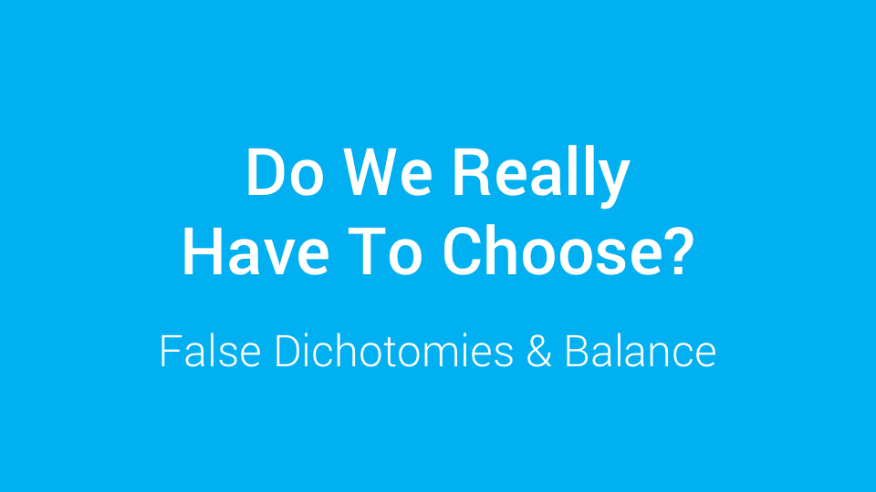
We don't always need to choose one viewpoint over another. Maybe just like Spider-Man, we can choose both.
For example, instead of banning unhealthy foods or doing nothing, what if we required labels on bad foods. People could still buy the unhealthy stuff, but they are able to make more educated choices.
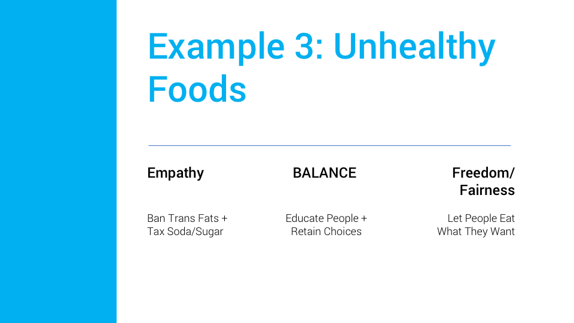
Or when it comes to pay, what if we reached a balance between empathy and transparency? What if there were anonymous reports showing average salaries by position, gender, and race.
Usually, both extremes are motivated by fear. Liberals fear innocent people will die if we don't take guns of the street. Conservatives fear the government will become tyrannical and there will be nothing citizens can do about it because guns have been banned.
Nifty fears employees will cost them more or leave if they predict the future wrong. Employees fear they will be taken advantage of.
Fear is why in many scenarios, choosing one side or another isn't the best option. We need to balance both side's interests.
By now we know empathy can go too far. The question we have to ask is: Is empathy the real reason, or the good reason? What I mean by that, is that people have multiple reasons or motives for doing things. And sometimes the real reasons aren't that nice.
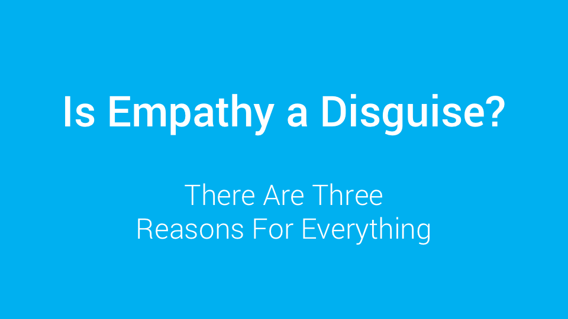
So, when it comes to finding the proper balance, you need to be aware of the three reasons people do anything:
- The good reason
- The real reason
- The fake reason
"A Person Has Two Reasons for Doing Anything: A Good Reason and the Real Reason. - J.P. Morgan
Let's look at some examples:
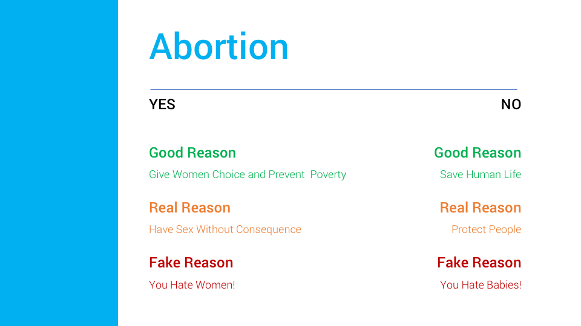
When it comes to abortion, here is one possible set of reasons for both sides:
- Real Reason: Have Sex Without Consequence
- Real Reason: Protect People
- Fake Reason: You Hate Women
- Fake Reason You Hate Babies
- Good Reason: Population control, give woman the rights/freedoms to do what they want. To avoid forcing women into poverty. To protect life of mother. To protect woman from having a baby when they aren't ready or don't want it.
- Good Reason: Save human life.
Keep in mind this is just an example of two individuals. The real reason can shift from person to person. Maybe Person A lives in a progressive family and toes the pro-choice line because they don't want to cause conflict or be perceived as 'regressive.'
Let's look at Salary Transparency now:
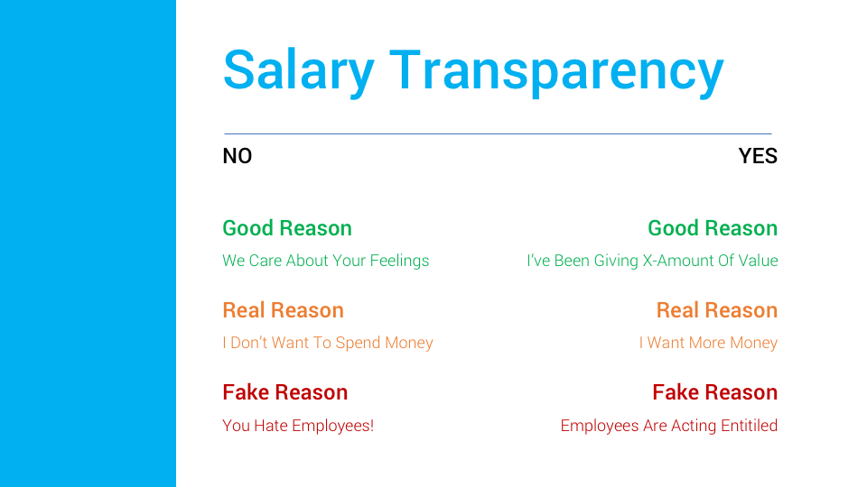
People don't fight for the extremes because they believe in their philosophy so much. They fight for the extremes due to the actual real reasons they don't make explicitly clear.
Thus, it's only when you understand the real motives and reasons that you can have an effective conversation about balance.
If you end up at the third level trading insults, the relationship is in danger. One of two things will happen. Either, there will be a split. Or the non-stubborn one will acquiesce and harbor resentment - resulting in artificial harmony. Is it possible this is what is happening at Nifty?
The Cornerstone: Trust
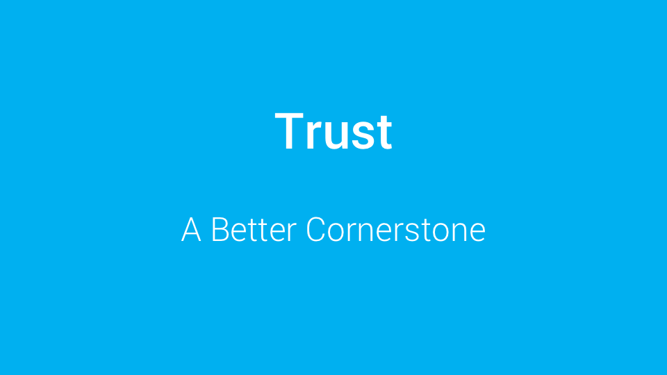
The current cornerstone of Nifty seems to be that of empathy. It is treated as the overarching principle
I argue a better cornerstone is trust.
Empathy by itself means nothing - because empathy can be used justify and excuse anything.
Nazi officials could justify their actions by saying they were showing empathy towards their family, because if they didn't follow orders, their family would be killed.
A married man can justify not telling his spouse that he is having an affair and cheating on her - because that would be empathetic to her. Telling her would obviously hurt her feelings. But it would also break trust.
Whenever we're faced with a trade-off, like the scenarios presented earlier, we should make our final decision not based on empathy, but through the lens of trust.
Which option will retain the most trust?
Withholding an affair from your wife is different than withholding the truth about how she looks now that she is pregnant. Why?
Because lying about how she looks doesn't break trust. She already knows she doesn't. Lying about the affair does.
So, whether talking about employees, clients, or any other relationship in life, there is a secret:
The Key To Ethical Retention of the Right People is Trust
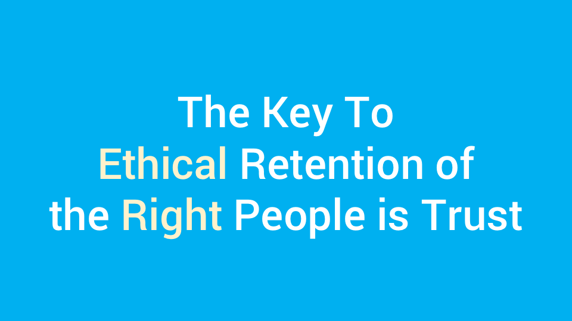
You can have unethical retention where you force people to stay or something unpleasant will happen. You make it so hard to quit that the person "decides" to stay.
- In dating, it's the domestic violence relationship where one partner threatens to harm himself or a child if the other tries to leave.
- For clients, it's making it difficult to quit by making it an elongated process or using dense legalese contracts. One explicit example is Scorpion and how they hold websites hostage because they own them.
- For employees, it's restrictions like non-competes. It's legalese contracts that say anything you work on in your own time, while employed by Nifty, belongs to Nifty. These types of restrictions, ensure you can't use everything you learned in another job, and you can't make a smooth transition to your own projects.
You can change yourself and your values to retain the wrong people, but that isn't good either. You don't want to retain these people.
- In dating, it's when one partner wants you to change who you are (hair color, listen to certain music), but doesn't reciprocate
- For clients, it's those who want quick results cheap. These are cost sensitive that want the world for nothing.
- For employees, it's those who demand to play ping pong and foosball all day while watching cat videos.
If we're committed to ethical retention of the right people, we need trust.
What is Trust?
According to Stephen Covey in The Speed of Trust, trust boils down to a simple equation:
Trust = Confidence in Competency × Confidence in Character
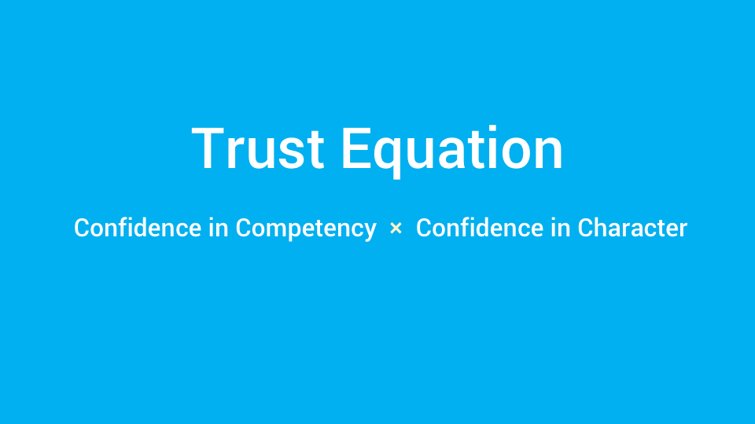
Trust requires us to believe that people have the ability to do what they promise. Trust also requires us to believe that the other person has our best interests at heart
When this doesn't happen, trust is broken. It's the breaking of trust that leads to turnover. Here are examples
- Groth Law Firm lost trust in Nifty when he found we spent $2,000 and got no leads and when he found that we had put a different law firm's phone number on his landing page. He gave us benefit of the doubt at first, but eventually cut the cord.
- Evan Braunstein was angry when we didn't follow through on a promise of removing local spam listings. The cause of this was a poor handoff from sales to PM
- Robinson & Henry dropped us because we weren't competent in creating content they liked.
- Many designs we launched were late or had issues causing PMs to lose trust in the design/dev team.
- A promise that was made is broken, especially when done without explanation
- They haven't seen growth in years, while other people are getting promoted and getting raises
- Concerns they have are brushed aside
- Favoritism is showed to certain people
How Do We Build Trust?
As trust is so important, we need to be intentional about building it. One of the best ways to build trust is communication. When you don't communicate, you open the door for people to make assumptions
Yes, communicating takes time. Time that could be used for work. But, it builds trust, which is so much more valuable
Why Don't People Communicate?
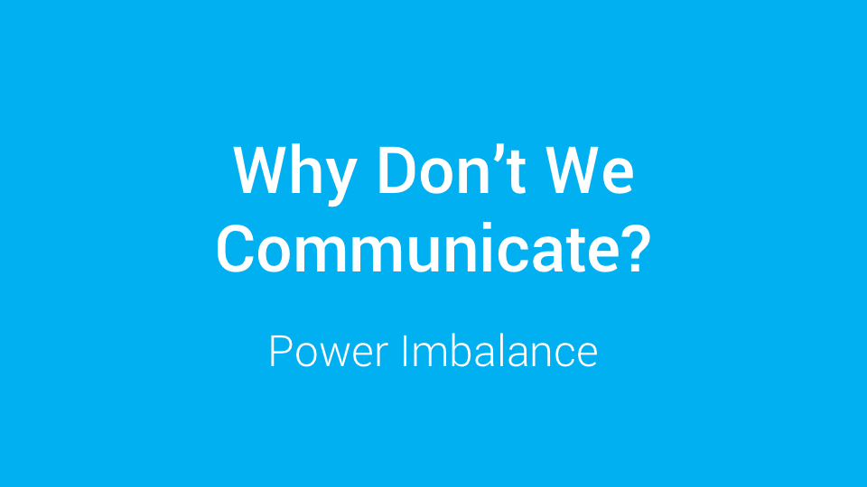
A question I heard posed by management in the past is why don't employees speak up? Why doesn't management know about dissatisfaction?
The answer is that it's inherently risky. What if the employee is retaliated against, called 'negative', or worst-case scenario fired? Do they want to risk making their job miserable, or even losing it? If I have a mortgage and a family, I'd rather just quietly complain until I find something better. I'll tell you what you want to hear than risk retaliation.
It boils down to power imbalance. Employees have no recourse. They can't fire they're supervisor. Management is at a more comfortable place with generating controversy because they have more power.
A non-leadership employee speaking up is akin to a new employee at Apple 10 years ago telling Steve Jobs he is wrong. The new employee may be right, but egos need to be appeased. There is a higher likelihood of getting fired for telling the boss he is wrong than of being congratulated for solving an issue
When you understand this dynamic, you will realize that if you truly want feedback, you either need to build trust or create anonymous feedback systems.
This isn't just conjecture. Many people feel this. Consider this comment on a career article:
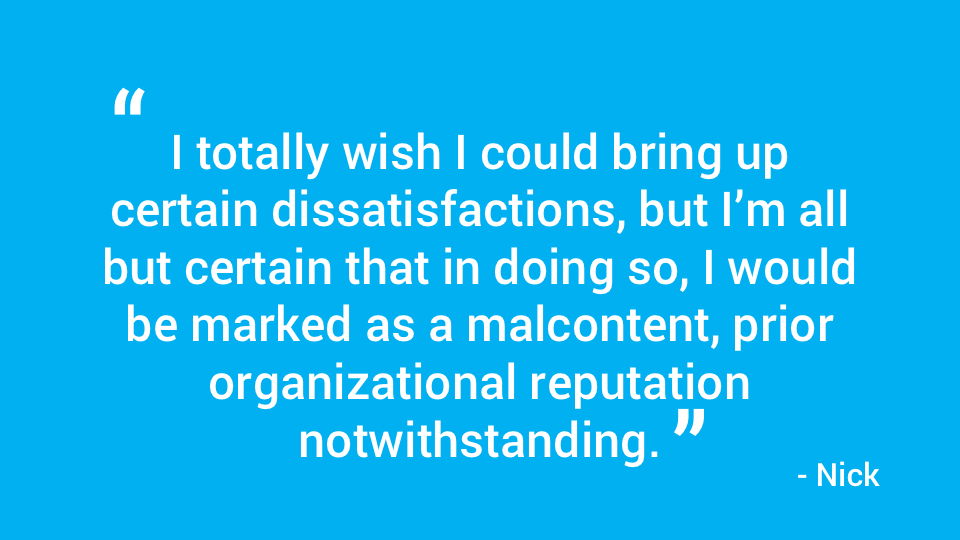
Oh, I totally wish I could bring up certain dissatisfactions, but I'm all but certain that in doing so, I would be marked as a malcontent, prior organizational reputation notwithstanding.
It'd be awesome to have an employer who actually genuinely cared about its employees' fulfillment, but too many employers simply don't, and will actively or passively retaliate against you for demonstrating any indication of wanting more. Where that's the case, I feel Master Sun was right: "let your plans be dark and impenetrable as night, and when you move, fall like a thunderbolt."
Here's another frank quote from a different commenter
These are harsh quotes from people in harsh environments. Is Nifty such an environment? It's hard to know because of the secrecy that is justified by "empathy".My boss gets the fictional story I deem most likely to protect my continued income. My actual plans and goals and aspirations are none of their d*** business.
My boss' purpose is to extract the maximum output from me for the minimum compensation he can possibly get away with. Period. If anything, they have a financial incentive to sabotage my growth and progress so they can keep me in my current place, producing more than newer employees for less money than newer employees expect.
Homework
I want everyone to think of ways we can build trust at Nifty. I think two places to start is reading Speed of Trust and watching Dawn of the Planet of the Apes, which is a great film about trust.
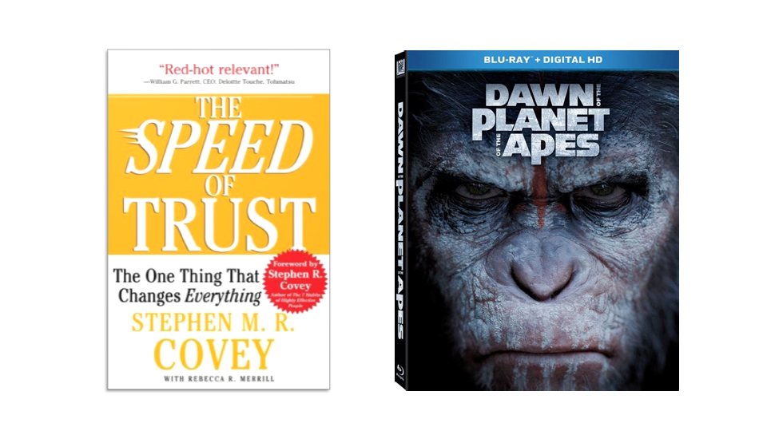
I highly recommend watching the film. Here are some of the interesting takeaways I got. I would recommend paying attention to these parts:
- The Reflexive Response To The Breaking of Trust is Revenge. The humans reacted to a change out of fear.
- Giving The Benefit of The Doubt Can Pay Off. Did Caesar give too much benefit of the doubt? Some apes thought so. But in the end Caesar's actions paid off.
- Our Unique, Personal Experiences Shape Us and Who We Trust. Koba's distrust was too much. So were the human's commander. Both characters had these predispositions for good reason. Koba was tortured by humans. The virus from the apes killed the human's commander's son. Compare Koba to Caesar whose life was saved by a human. You can see that Caesar was more predisposed to trust - due to his relationship with James Franco's character.
- Our Biases Can Be Wrong. The people Caesar started out trusting least turned out to be the most trustworthy.
- Peace Requires Trust. In the film, there could have been a chance for peace — a win-win situation for everyone. But war broke out because there was no trust and no communication.
One of Caesar's biggest mistakes was assuming trust from Koba. Assumption of trust is what makes betrayal hurt so much. Some people choose to betray others due to selfishness - they have no loyalty but to the highest bidder of whoever will give them what they want. For others, their loyalty dies due to broken trust. Blind loyalty is bad and shouldn't be asked for. Maybe if Caesar took more time to explain his reasoning to Koba, the war could have been prevented.
Conclusion
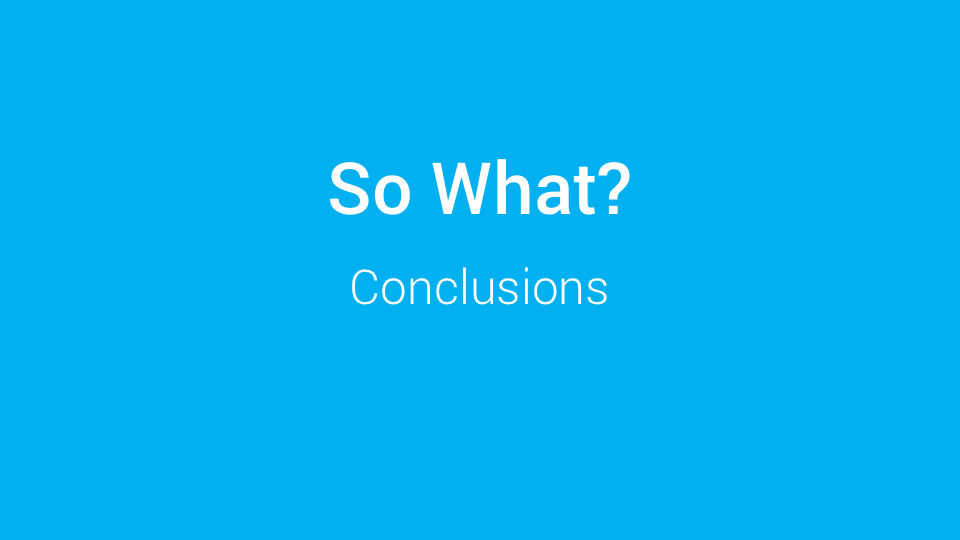
There are a few things I hope you take away from reading this:
- The world isn't black and white
- Nifty cares about employees. They just have a weird way of showing it.
- Employees should give the benefit of the doubt
- We need to pursue trust with clients and co-workers.
To Non-Management
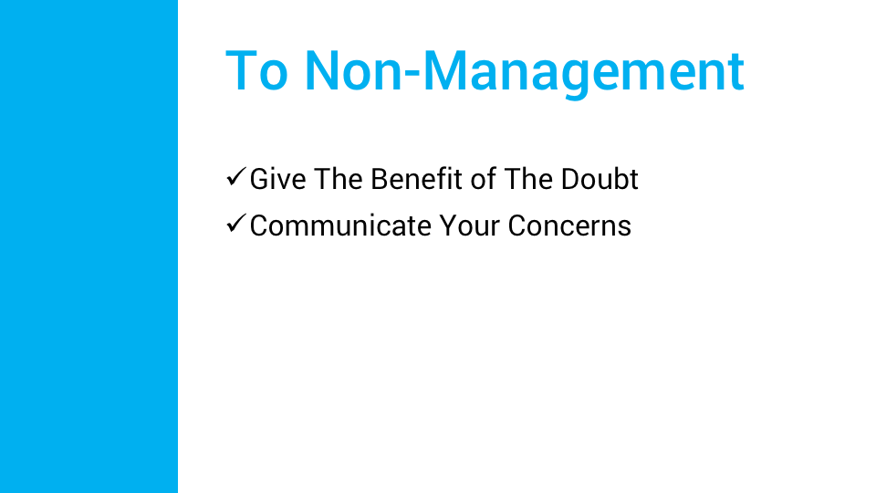
The world is not black and white. There are lot of interconnected factors. Making a single change in one spot can drastically affect something else. Such complexity makes mistakes inevitable.
A lot of hurtful decisions come out of love.
I urge you to give the benefit of the doubt to Nifty leadership. If you have a problem, don't bury it.
Don't ignore it.
Don't relegate yourself to complaining to co-workers.
Bring it out.
You may be surprised with how much thought went into that decision. You may find out that what was said was not malicious, but incompetent.
I remember last year I took a vacation to LA, and while I was gone, Joos did a training. And there was something he said at the end that discouraged a number of people. He said something like "If you want to grow in Nifty, you have to do a 10x project outside of work. You have to do extra." What was meant as encouragement was understood as a command to work more if you wanted to progress in the company at all. Fortunately, that wasn't the case. But it never would have been addressed if I didn't overhear others talking about it
Hanlon's razor is an aphorism (a piece of wisdom) that says "never attribute to malice what can be adequately explained by stupidity." I've come to a point where I truly think that Nifty leadership is not bent on maliciously taking advantage of people. Rather, they have been incompetent at communicating to employees
I can promise you that as a Senior Strategist, I'm constantly advocating for better communication.
So again, I encourage you to give benefit of the doubt. I've seen many misunderstandings result in conflicts that should have never existed.
I had a friend who started dating this girl in college. About 3 months into the relationship, my friend went on a solo camping trip. He's a bit of a jokester and texted his girlfriend that he was having a good time sitting next to a beautiful girl. He was referring to a picture of her he had placed next to him. Unfortunately, before he could text a picture of what he was referring to, he dropped his phone in the water. His girlfriend assumed the worst - that he was cheating on her. So, there was a big argument that ensued.
This happens in many 'romantic' films. There is some huge misunderstanding that could be prevented if people just listened. It's always a variation of 'the woman sees a guy with another woman and assumes the worst.' The woman then proceeds to tell the guy "You know exactly what you did."
The guy usually says "Um, no I don't. That's why I'm trying to talk to you right now and get this figured out"
Such scenarios always seemed stupid to me. And that's why I'm so quick to extend the benefit of the doubt. I urge you to do the same
Beyond that, I urge you to find ways to build trust with your clients
To Management
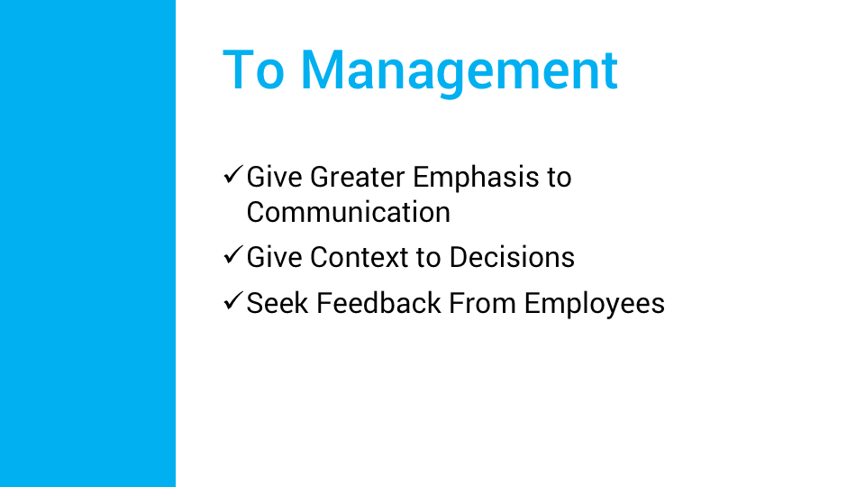
All my concerns could have been prevented by better communication.
What it boils down to is that management is either incompetent at communication or skillfully manipulative.
I sincerely hope it's the first. While incompetence isn't good, it's something that can be fixed. No one is perfect. What needs to happen now is more deliberate, clear communication. Management needs to ask themselves what they can do to get better at building trust with employees.
I encourage you to give more context to your decisions. You don't need to withhold information to prevent misunderstandings. You need to give context. It would be great if you said:
"I know we did x last year, but we're changing due to y. Here is what x cost us. It's not sustainable."
I may not like the change, but it no longer feels manipulative. There is context and the truth is laid bare.
I ask that management continue working towards building trust. Because I can say that if I ever become fully convinced leadership is being manipulative, that's the day I leave Nifty.
I've talked to people one-on-one and some of their stories really do make leadership feel manipulative. Whether the stories are true or not, I don't know. But, if they are, I hope today acts as a catalyst for stepping away from manipulation and stepping towards building trust.
Regardless, there is a deficit of trust that needs to be solved.
Addendum: Will A Populist Rise?
Your knee-jerk reaction may be to ignore the challenging portions of this presentation and say there isn't a trust problem.
Or you may double-down and say the elite do know what's best, and the concerns of employees don't really matter.
I would caution against this.
Consider Donald Trump. One New York Times editorial argues that Donald Trump won because "voters were disgusted by a governing elite that seemed corrupt and out of touch."
Or to continue using the media examples I used earlier, consider Jack Bauer and Koba. They were both populists that rebelled against the legitimate power structures.
If you're not careful and don't engage, a populist may rise to power.
And just like the examples I provided, the populist won't care about rules. They will manipulate and do whatever it takes to discredit and destroy the elite. The anger of the people they represent will blind those people to objectivity, balance, and nuance.
If that ever happens, there will be little you can do stop them.
We have a chance like in Dawn of the Planet of The Apes to achieve mutually-benefical peace. We need to get both sides to trust each other and achieve a mutually-beneficial balance. But if both sides become distrustful, war may come when the people who feel oppressed (even if they may not be) rally behind a leader.
Where do populists come from? A populist is usually a normal person who's been pushed too far.
People don't care about issues until they are personally affected.
In 24, Jack Bauer was pushed into the role of a populist. He just wanted to be left alone, but the other side overreached and awoke an unstoppable monster. Bauer wasn't doing what he did because of justice, he was doing it out of revenge. Bauer was able to hide his real reason with a good reason.
Mike did the same thing with his spat against Jay Lenkersdorfer. He became a populist 'fighting for the people' and 'journalistic integrity' - but only when the problem became personal to him. He hid his real reason with a good reason.
All that to say if there is perceived wrong, it may push someone to fight.
Now, not everyone who gets angry will become a populist. In each of the examples I provided, there were others who were against the corruption but chose to fight against it in a different way:
- In 24, Ethan Kaine resigned in protest.
- In US Politics, Rand Paul continues to fight according to "the rules"
- In Dawn of the Planet Of the Apes, Blue Eyes continued to give the benefit of the doubt to his father Caesar.
Perhaps most people will react in a non-populist way. But if you want to avoid the risk completely, it's imperative that we build trust, communicate, and work towards balance.